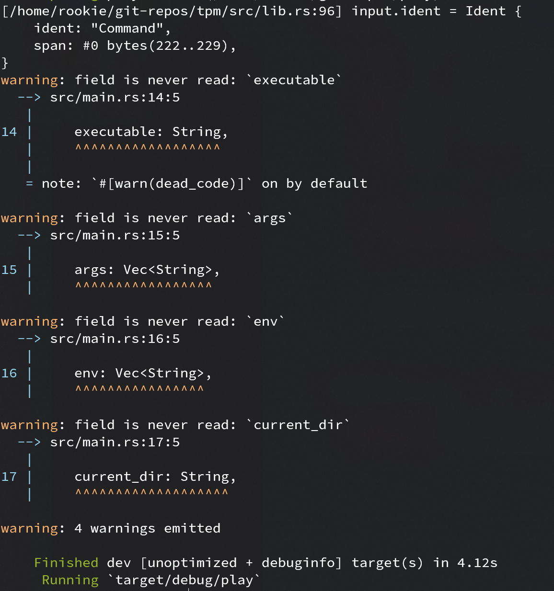
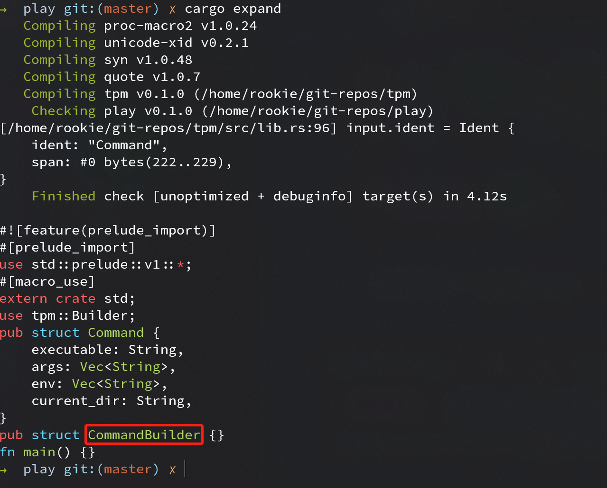

Builder - 实现
目标
对于如下一个结构体，使用 Builder 宏可以方便地使用 builder 模式构建结构体“实例”
use derive_builder::Builder; #[derive(Builder)] pub struct Command { executable: String, args: Vec<String>, env: Vec<String>, current_dir: String, } fn main() { // 通过 builder 方法获取一个 builder let mut builder = Command::builder(); // builder 自动实现与原结构体字段同名的构建函数 builder.executable("cargo".to_owned()); builder.args(vec!["build".to_owned(), "--release".to_owned()]); builder.env(vec![]); builder.current_dir("..".to_owned()); // 最后调用 build 方法获取构建好的结构体 let command = builder.build().unwrap(); }
实现
思路
不考虑使用宏的情况下，可以创建一个 CommandBuilder 结构体，其实现了 executable, args 和 env 等方法。
#![allow(unused)] fn main() { pub struct CommandBuilder { executable: Option<String>, args: Option<Vec<String>>, env: Option<Vec<String>>, current_dir: Option<String>, } impl CommandBuilder { pub fn executable(&mut self, executable: String) -> &mut Self { self.executable = Some(executable); self } pub fn args(&mut self, args: Vec<String>) -> &mut Self { self.args = Some(args); self } pub fn env(&mut self, env: Vec<String>) -> &mut Self { self.env = Some(env); self } pub fn current_dir(&mut self, current_dir: String) -> &mut Self { self.current_dir = Some(current_dir); self } pub fn build(&self) -> std::result::Result<Command, &str> { Ok(Command { executable: self.executable.clone().ok_or("executable is not set")?, args: self.args.clone().ok_or("args is not set")?, env: self.env.clone().ok_or("env is not set")?, current_dir: self.current_dir.clone().ok_or("current_dir is not set")?, }) } } }
观察上面实现，我们需要先定义 xxxBuilder 的结构体，这个结构体所有字段名和 xxx 中的一样，但字段类型包了一层
Option。
接着相当于遍历 xxx 中的每个字段，为 xxxBuilder 实现同名方法，接着在 build 方法构建出需要的结构体。
macro_rules! 无法为我们实现上面功能，因此需要请出 Rust 中的过程宏(Procedural Macro)。
过程宏简介
ref: Rust Book - Procedural Macro
过程宏同样是对代码进行展开，但它能在编译器对 AST 进行操作，因此可实现更多功能。
过程宏分为三种形式
- 类函数式过程宏(function-like macros)，类似
macro_rules!创建的宏，如custom! - 推导宏(derive macros)，如
#[derive(CustomDeriv)] - 属性宏(derive macros)，如
#[CustomAttributes]
创建过程宏 crate 需要如下几步。
cargo new --lib <create_name>
接着编辑 crate Cargo.toml 文件, 添加如下设置
[lib]
proc-macro = true
如果某个过程宏只是自用，不共享给其他 crate 使用，那是不是可以把他们放入同一个 crate 呢？ 答案是*“不行”*。为什么呢？
在 Rust Book 中这样描述 crate
A crate is a unit of compilation and linking, as well as versioning, distribution, and runtime loading.
“crate 是 Rust 中的最小编译单位”, 而过程宏是作用是在编译阶段操作 AST，如果要求一个 crate 能在编译自己时对自身 AST 进行映射， 显然是在为难编译器。
在进行上面的配置后，编译其会自动提供 proc_macro 依赖， 这个依赖提供了操作 Rust token 流所需的方法和类型，但操作 AST 是一项繁琐无聊的工作，好在社区大佬 dtolany 提供了 syn 和 quote两个库方便我们操作 AST。
[lib]
proc-macro = true
[dependencies]
syn = { version = "1.0.48", features = ["extra-traits"] }
quote = "1.0.7"
syn 提供了 proc_macro::TokenStream 到更高级数据结构如 syn::DeriveInput 解析，而 quote 则可以让我们像写模板一样填充
一些数据，就可以生产符合 Rust 语法规则的 TokenStream。
为了方便开发，syn 应该带上 "extra-traits" 特征，方便通过 Debug trait 开发，在正式发布时为了加快编译速度再去掉。
如果对 syn 不熟悉建议花点时间看看 syn 的 README.md 和文档，特别是DeriveInput 文档。
最后一个非常有用的工具是 cargo-expand, 它可以展示展开后的过程宏，先安装 nightly Rust, 而后 cargo install cargo-expand 即可安装。
获取被修饰结构体名称
按照 syn README 上的示例和文档可以很方便地获取被修饰结构体名称
#![allow(unused)] fn main() { use proc_macro::TokenStream; use quote::quote; use syn::{parse_macro_input, DeriveInput}; #[proc_macro_derive(Builder)] pub fn derive(input: TokenStream) -> TokenStream { // 把 TokenStream 解析为语法树 let input = parse_macro_input!(input as DeriveInput); // indent 即为被修饰结构体名称相关数据结构 let name = dbg!(input.ident); let bname = format!("{}Builder", name); // 构建一个新的 indent let bident = syn::Ident::new(&bname, name.span()); // 最后填充扩展 AST let expanded = quote! { pub struct #bident {} }; //把展开后的 AST 返回给编译器 TokenStream::from(expanded) } }
在编译使用 Builder 宏的 crate 时应该能看到 dbg! 打印出的信息

如果使用 cargo expand 应该能看到我们已经创建了 CommandBuilder 结构体
